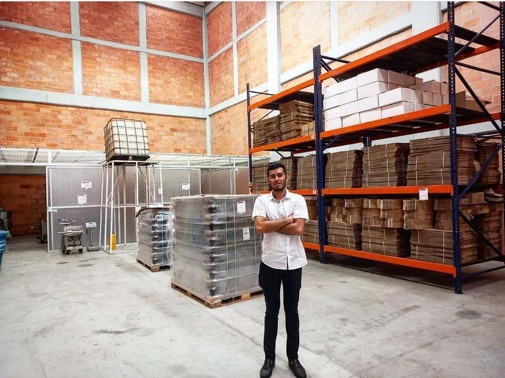

Nuestra Empresa
Nuestra empresa es el claro ejemplo que todo con esfuerzo se puede lograr, Surgio de una pequeña idea y ahora estamos felices del gran trabajo que hemos conseguido, La empresa como nuestro nombre lo indica se encarga de elaborar licor a base de café, Surgen recetas como cócteles finalmente elaborados hasta nuestro granizado de café de los Andes VIP, Nuestros productos son de calidad y 100% naturales.
Nuestra Historia
Exotic Liquor sas, es una empresa que nace a partir de una idea de emprendimiento de un joven empresario, quien desde el año 2016 adelanto junto con un equipo de trabajo la idea de crear un productorepresentativo del departamento del Tolima y el país. fue ahí donde se vio por primera vez el licor de café de los andes vip, se realizaron participaciones en diferentes ferias y eventos con énfasis en el agro y el café como agro expo 2017, feria de cafes especiales en anzoategui año 2017, feria de te y café en la casa del señor embajador de la republica popular de China, lanzamiento tasa a la excelencia Colombia tierra de diversidad en la casa del Tolima en Bogota, entre muchas más, para poder mirar la aceptación del producto, y desarrollarlo de tal manera que lograra los objetivos planteados. en el año 2019 en la convocatoria 69 primer corte, la empresa Exotic Liquor sas sale favorecida con recursos para poner en marcha dicho proyecto e idea innovadora. posteriormente el 08 de Julio del 2020 es cuando se inicia la ejecución de la empresa y en el mes de Septiembre del año 2021 la empresa ya cuenta con todos los permisos y requisitos legales para iniciar con su venta.